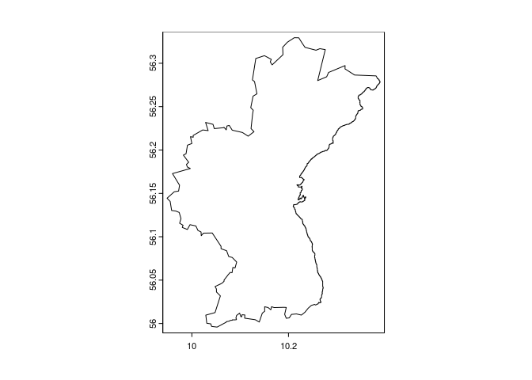
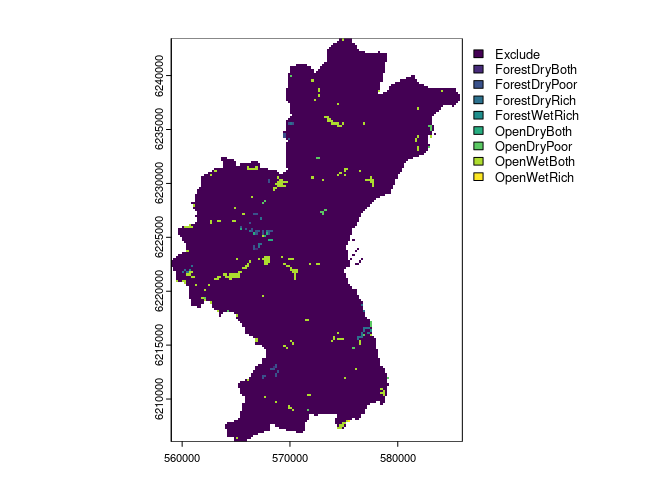
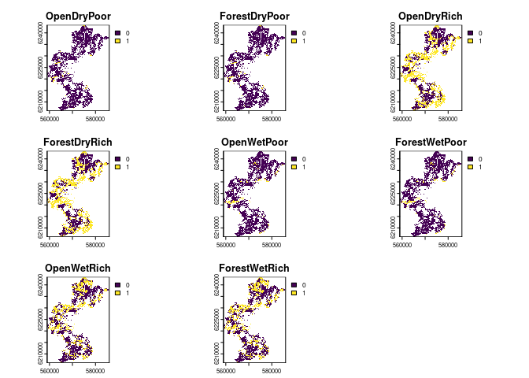

- 1 SpeciesPoolR
- 2 Motivation for the pacakge
- 3 Required Data Files
- 4 Using SpeciesPoolR Manually
- 5 Running the SpeciesPoolR Workflow
- 6 References
The goal of the SpeciesPoolR package is to generate potential species pools and their summary metrics in a spatial way. You can install the package directly from GitHub:
#install.packages("remotes")
remotes::install_github("derek-corcoran-barrios/SpeciesPoolR")No you can load the package
2 Motivation for the pacakge
2.1 Rare species are common and important
In ecological research, the debate on whether rare species outnumber common species within communities is pivotal for understanding biodiversity and guiding conservation efforts. Numerous studies have shown that rare species typically dominate large ecological assemblages, although common species often exert a more substantial influence on overall species richness patterns (Magurran and Henderson 2003; Bregović, Fišer, and Zagmajster 2019; Schalkwyk, Pryke, and Samways 2019). This complexity underscores the need for innovative approaches in studying biodiversity, particularly since rare species are challenging to model using traditional Species Distribution Models (SDMs) due to their low occurrence rates (Boyd et al. 2022).
Given the limitations of SDMs in capturing the dynamics of rare species, it is essential to develop alternative methods for integrating these species into biodiversity assessments and conservation planning. Although rare species contribute uniquely to functional diversity and ecosystem stability, especially in specific habitats (Chapman, Tunnicliffe, and Bates 2018; Säterberg et al. 2019), their elusiveness in ecological models presents a significant challenge. The question of the minimum number of presence records required for reliable SDMs is crucial. Research has shown that while as few as 10-15 presence observations can produce nonrandom models for some species (Støa et al. 2019), others require higher thresholds—ranging from 14 to 25 records depending on the species’ prevalence and geographic range (Proosdij et al. 2016; Sampaio and Cavalcante 2023). These findings suggest that even sparse datasets can be useful, but the threshold varies significantly depending on species traits and habitat characteristics. Therefore, researchers must explore novel analytical frameworks and conservation strategies that better accommodate the ecological importance of rare species, thereby enhancing our ability to manage and preserve biodiversity effectively (Reddin, Bothwell, and Lennon 2015).
In highly degraded habitats, such as Denmark, where over 60% of the land is dominated by agriculture and less than 10% remains as natural habitat, traditional SDMs may face further limitations. The scarcity of natural habitats means that presence records are often skewed towards human-modified landscapes, complicating the modeling of species’ ecological preferences. In such contexts, where the majority of occurrences may not reflect the species’ natural behaviors or habitat use, relying on complex SDMs could lead to misleading predictions. Instead, simpler algorithms that incorporate basic dispersal mechanisms and habitat filtering might be more effective. By reducing assumptions about habitat preferences, these methods can provide a more realistic framework for conservation planning, particularly when dealing with the restoration of agricultural lands into natural habitats.
For rare species, and indeed for many others, this approach may offer a more practical solution in scenarios where detailed ecological data is sparse or unreliable. Studies have suggested that in such landscapes, simplistic models that prioritize dispersal and broad habitat suitability over intricate ecological niches can better capture species’ potential distributions and their responses to environmental changes (Guisan et al. 2006; Thuiller et al. 2005), an example to this approach would be range bagging (Drake 2015). This pragmatic approach is especially pertinent when planning conservation actions in areas where habitat degradation has left little intact nature, and it ensures that even under data constraints, effective biodiversity management can still be pursued.
3 Required Data Files
To effectively execute the SpeciesPoolR workflow, a set of essential data files must be provided. These files contain the necessary spatial and taxonomic information that underpin the various analytical steps in the package. Below, we detail each required file and its role within the workflow.
3.1 Species List File
File Type: CSV or Excel file
Description: The species list file serves as the foundational dataset, comprising the species of interest for your analysis. At a minimum, this file must include a column for the scientific names of species (
Species). Additional taxonomic columns, such asKingdom,Class, andFamily, may also be included to facilitate filtering and subgroup analyses.
An example of this file is provided within the package and can be accessed using the following code:
exampleSpecies <- system.file("ex/Species_List.csv", package="SpeciesPoolR")
print(exampleSpecies)
#> [1] "/home/au687614/R/x86_64-pc-linux-gnu-library/4.4/SpeciesPoolR/ex/Species_List.csv"This dataset is further discussed in the section on Reading and Filtering Data, with a filtered subset displayed in Table 4.1.
3.2 Shapefile
File Type: Shapefile (.shp)
Description: The shapefile delineates the geographic area of interest, which can range from a broad region, such as a country, to a more specific locality, such as a nature reserve. This file is utilized to spatially constrain species occurrences, ensuring that only those within the defined boundaries are included in the analysis.
If a shapefile is unavailable, a two-letter country code (e.g., “DK” for Denmark) may be provided as an alternative to specify the area of interest.
An example shapefile is included in the package and can be accessed as follows:
shp <- system.file("ex/Aarhus.shp", package="SpeciesPoolR")
print(shp)
#> [1] "/home/au687614/R/x86_64-pc-linux-gnu-library/4.4/SpeciesPoolR/ex/Aarhus.shp"The shapefile’s application is illustrated in the section on Counting Species Presences, where it is used to delineate the boundaries of Aarhus commune, as shown in Figure 3.1.

Figure 3.1: Outline of the comune of Aarhus
3.3 Raster Template File
File Type: Raster file (e.g., .tif)
Description: The raster template file is employed as a spatial reference for rasterizing species presence buffers. It must cover the entire area of interest and possess a resolution appropriate for the intended analysis. This template ensures consistent spatial alignment across all raster-based operations.
You can explore an example of this file using the following code:
template <- system.file("ex/LU_Aarhus.tif", package="SpeciesPoolR")
print(template)
#> [1] "/home/au687614/R/x86_64-pc-linux-gnu-library/4.4/SpeciesPoolR/ex/LU_Aarhus.tif"The raster template’s role in buffer creation is further explained in the section on Creating Buffers Around Species Presences, with an example shown in Figure 3.2.

Figure 3.2: Raster of the Aarhus comune, the package will use Non NA cells as part of the template
3.4 Land-Use Raster File
File Type: Raster file (e.g., .tif)
Description: This file contains land-use classifications for the study area, where each raster cell is assigned to a specific land-use category (e.g., forest, wetland, urban). This data is crucial for modeling habitat suitability, enabling the filtering of species occurrences based on the prevalent land uses within their potential habitats.
An example file is provided in the package:
LU <- system.file("ex/LU_Aarhus.tif", package="SpeciesPoolR")
print(LU)
#> [1] "/home/au687614/R/x86_64-pc-linux-gnu-library/4.4/SpeciesPoolR/ex/LU_Aarhus.tif"The land-use raster is identical to the template shown in Figure 3.2.
3.5 Land-Use Suitability Raster File
File Type: Raster file (e.g., .tif)
Description: This file comprises binary suitability values for various land-use types within the study area, indicating whether each land-use type is suitable (value = 1) or unsuitable (value = 0) for the habitat of interest. The data is subsequently transformed into a long-format table, which is integral to the habitat filtering and species distribution modeling processes.
An example raster file is available in the package, and its application is discussed in the section on Preparing Land-Use Data. A visualization of this file is presented in Figure 3.3.

Figure 3.3: Landuse suitability for 8 different landuses in the aarhus commune
4 Using SpeciesPoolR Manually
4.1 Importing and Downloading Species Presences
4.1.1 Step 1: Reading and Filtering Data
If you are going to use each of the functions of the SpeciesPoolR manually and sequentially, the first step would be to read in a species list from either a CSV or an XLSX file. You can use the get_data function for this. The function allows you to filter your data in a dplyr-like style:
f <- system.file("ex/Species_List.csv", package="SpeciesPoolR")
filtered_data <- get_data(
file = f,
filter = quote(Kingdom == "Plantae" &
Class == "Magnoliopsida" &
Family == "Fabaceae")
)This will generate a dataset that can be used subsequently to count species presences and download species data as seen in table 4.1
| redlist_2010 | Kingdom | Phyllum | Class | Order | Family | Genus | Species |
|---|---|---|---|---|---|---|---|
| NA | Plantae | Magnoliophyta | Magnoliopsida | Fabales | Fabaceae | Vicia | Vicia sepium |
| NA | Plantae | Magnoliophyta | Magnoliopsida | Fabales | Fabaceae | Genista | Genista tinctoria |
| NA | Plantae | Magnoliophyta | Magnoliopsida | Fabales | Fabaceae | Trifolium | Trifolium vesiculosum |
| LC | Plantae | Magnoliophyta | Magnoliopsida | Fabales | Fabaceae | Vicia | Vicia sativa |
| NA | Plantae | Magnoliophyta | Magnoliopsida | Fabales | Fabaceae | Lathyrus | Lathyrus latifolius |
| NA | Plantae | Magnoliophyta | Magnoliopsida | Fabales | Fabaceae | Anthyllis | Anthyllis vulneraria |
| NA | Plantae | Magnoliophyta | Magnoliopsida | Fabales | Fabaceae | Vicia | Vicia sepium |
| NA | Plantae | Magnoliophyta | Magnoliopsida | Fabales | Fabaceae | Lathyrus | Lathyrus japonicus |
| NA | Plantae | Magnoliophyta | Magnoliopsida | Fabales | Fabaceae | Vicia | Vicia villosa |
Table 4.1: Species that will be used to generate species pools
4.1.2 Step 2: Taxonomic Harmonization
Next, you should perform taxonomic harmonization to ensure that the species names you use are recognized by the GBIF taxonomic backbone. This can be done using the Clean_Taxa function:
Clean_Species <- SpeciesPoolR::Clean_Taxa(filtered_data$Species)The resulting data frame, with harmonized species names, is shown in table 4.2
| Taxa | matched_name2 | confidence | canonicalName | kingdom | phylum | class | order | family | genus | species | rank |
|---|---|---|---|---|---|---|---|---|---|---|---|
| Vicia sepium | Vicia sepium | 99 | Vicia sepium | Plantae | Tracheophyta | Magnoliopsida | Fabales | Fabaceae | Vicia | Vicia sepium | SPECIES |
| Genista tinctoria | Genista tinctoria | 99 | Genista tinctoria | Plantae | Tracheophyta | Magnoliopsida | Fabales | Fabaceae | Genista | Genista tinctoria | SPECIES |
| Trifolium vesiculosum | Trifolium vesiculosum | 99 | Trifolium vesiculosum | Plantae | Tracheophyta | Magnoliopsida | Fabales | Fabaceae | Trifolium | Trifolium vesiculosum | SPECIES |
| Vicia sativa | Vicia sativa | 97 | Vicia sativa | Plantae | Tracheophyta | Magnoliopsida | Fabales | Fabaceae | Vicia | Vicia sativa | SPECIES |
| Lathyrus latifolius | Lathyrus latifolius | 98 | Lathyrus latifolius | Plantae | Tracheophyta | Magnoliopsida | Fabales | Fabaceae | Lathyrus | Lathyrus latifolius | SPECIES |
| Anthyllis vulneraria | Anthyllis vulneraria | 97 | Anthyllis vulneraria | Plantae | Tracheophyta | Magnoliopsida | Fabales | Fabaceae | Anthyllis | Anthyllis vulneraria | SPECIES |
| Lathyrus japonicus | Lathyrus japonicus | 99 | Lathyrus japonicus | Plantae | Tracheophyta | Magnoliopsida | Fabales | Fabaceae | Lathyrus | Lathyrus japonicus | SPECIES |
| Vicia villosa | Vicia villosa | 97 | Vicia villosa | Plantae | Tracheophyta | Magnoliopsida | Fabales | Fabaceae | Vicia | Vicia villosa | SPECIES |
Table 4.2: Taxonomicallty harmonized dataset
4.1.3 Step 3: Counting Species Presences
After harmonizing the species names, it’s important to obtain the number of occurrences of each species in your study area, especially if you plan to calculate rarity. You can do this using the count_presences function. This function allows you to filter occurrences by country or by a shapefile. Below is an example for Denmark:
# Assuming Clean_Species is your data frame
Count_DK <- count_presences(Clean_Species, country = "DK")The resulting data frame of species presences in Denmark is shown in table 4.3
knitr::kable(Count_DK, caption = "Counts of presences for the different species within Denmark")| family | genus | species | N |
|---|---|---|---|
| Fabaceae | Vicia | Vicia sepium | 2897 |
| Fabaceae | Genista | Genista tinctoria | 988 |
| Fabaceae | Trifolium | Trifolium vesiculosum | 0 |
| Fabaceae | Vicia | Vicia sativa | 17379 |
| Fabaceae | Lathyrus | Lathyrus latifolius | 684 |
| Fabaceae | Anthyllis | Anthyllis vulneraria | 8876 |
| Fabaceae | Lathyrus | Lathyrus japonicus | 3904 |
| Fabaceae | Vicia | Vicia villosa | 243 |
Table 4.3: Counts of presences for the different species within Denmark
Alternatively, you can filter by a specific region using a shapefile. For example, to count species presences within Aarhus commune:
shp <- system.file("ex/Aarhus.shp", package="SpeciesPoolR")
Count_Aarhus <- count_presences(Clean_Species, shapefile = shp)The resulting data.frame for Aarhus commune is shown int table 4.4
| family | genus | species | N |
|---|---|---|---|
| Fabaceae | Vicia | Vicia sepium | 283 |
| Fabaceae | Genista | Genista tinctoria | 27 |
| Fabaceae | Trifolium | Trifolium vesiculosum | 0 |
| Fabaceae | Vicia | Vicia sativa | 467 |
| Fabaceae | Lathyrus | Lathyrus latifolius | 41 |
| Fabaceae | Anthyllis | Anthyllis vulneraria | 153 |
| Fabaceae | Lathyrus | Lathyrus japonicus | 39 |
| Fabaceae | Vicia | Vicia villosa | 10 |
Table 4.4: Counts of presences for the different species within Aarhus commune
Now it is recommended to eliminate species that have no occurrences in the area, this is done automatically in the workflow version:
library(data.table)
Count_Aarhus <- Count_Aarhus[N > 0,]So that then we can retrieve the species presences using the function SpeciesPoolR::get_presences.
Presences <- get_presences(species = Count_Aarhus$species, shapefile = shp)
#> [1] "Geometry created: POLYGON ((10.401438 56.302419, 10.048024 56.355225, 9.886316 56.019928, 10.239729 55.966657, 10.401438 56.302419))"there we end up with 1075 presences for our 7 species.
4.2 Creating Spatial Buffers and Habitat Filtering
4.2.1 Step 1 Creating Buffers Around Species Presences
Once you have identified the species presences within your area of interest, the next step is to create spatial buffers around these occurrences. These buffers represent the potential dispersal range of each species, helping to assess areas where the species might establish itself given a specified dispersal distance.
To create these buffers, you’ll use a raster file as a template to rasterize the buffers and specify the distance (in meters) representing the species’ dispersal range.
Raster <- system.file("ex/LU_Aarhus.tif", package="SpeciesPoolR")
buffer500 <- make_buffer_rasterized(Presences, file = Raster, dist = 500)In this example, the make_buffer_rasterized function generates a 500-meter buffer around each occurrence point in the Presences dataset. The function utilizes the provided raster file as a template for rasterizing these buffers.
The resulting buffer500 data frame indicates which raster cells are covered by the buffer for each species. Table 4.5 displays the first 10 observations of this data frame, providing a detailed view of the buffer’s overlap with raster cells, listing each cell and the corresponding species within that buffer.
| cell | species |
|---|---|
| 26 | Vicia sepium |
| 27 | Vicia sepium |
| 28 | Vicia sepium |
| 29 | Vicia sepium |
| 30 | Vicia sepium |
| 161 | Vicia sepium |
| 162 | Vicia sepium |
| 163 | Vicia sepium |
| 164 | Vicia sepium |
| 165 | Vicia sepium |
Table 4.5: Raster cells within the 500-meter buffer of each species
This table provides a detailed view of how the buffer overlaps with the raster cells, listing each cell and the corresponding species present within that buffer.
4.2.2 Step 2: Habitat Filtering
After creating the buffers, the next logical step is to filter these areas based on habitat suitability. This allows you to focus on specific land-use types or habitats where the species is more likely to thrive. Habitat filtering typically involves using raster data to refine or subset the buffer areas according to the desired habitat criteria.
4.2.2.1 Preparing Land-Use Data
Before you can apply habitat filtering, you need to prepare a long-format land-use table that matches each raster cell to its corresponding habitat types. This is done using the generate_long_landuse_table function, which takes the path to your raster file and transforms it into a long-format data frame. The function also filters the data to include only those cells where the suitability value is 1 for at least one land-use type.
# Get path for habitat suitability
HabSut <- system.file("ex/HabSut.tif", package = "SpeciesPoolR")
# Generate the long-format land-use table
long_LU_table <- generate_long_landuse_table(path = HabSut)This is crucial for the next steps, the result is shown in table 4.6, as it links each raster cell to potential habitats, enabling you to match species occurrences to suitable environments within their buffer zones.
| cell | Habitat |
|---|---|
| 79 | OpenDryPoor |
| 80 | OpenDryPoor |
| 81 | OpenDryPoor |
| 82 | OpenDryPoor |
| 83 | OpenDryPoor |
| 214 | OpenDryPoor |
| 215 | OpenDryPoor |
| 216 | OpenDryPoor |
| 217 | OpenDryPoor |
| 218 | OpenDryPoor |
Table 4.6: First 10 observations of landuse suitability per cell
4.2.2.2 Applying Habitat Filtering
Once you have the long-format land-use table, you can proceed with habitat filtering. To achieve this, you’ll use the ModelAndPredictFunc, which takes the presence data frame (e.g., Presences) obtained through the get_presences function and the land-use raster. This comprehensive function encompasses several critical steps:
1- Grouping Data by Species: The presence data is grouped by species using group_split, ensuring that each species is modeled individually.
2- Sampling Land-Use Data: For each species, land-use data is sampled at the presence points using the SampleLanduse function.
3- Sampling Background Data: Background points are also sampled from the same land-use raster, providing a contrast to the presence data.
4- Modeling Habitat Suitability: The presence and background data are combined and passed to the ModelSpecies function. This function fits a MaxEnt model to predict habitat suitability across the different land-use types.
5- Predicting Suitability: The fitted model is then used to predict habitat suitability for each species across all available land-use types.
Habitats <- ModelAndPredictFunc(DF = Presences, file = Raster)The resulting Habitats data frame contains continuous suitability predictions for each species across various land-use types. Table 4.7 shows the first 9 observations, illustrating the predicted habitat suitability scores for the first species in each land-use type.
knitr::kable(Habitats[1:9,], caption = "Predicted habitat suitability scores across various land-use types for the first species. The values represent continuous predictions, indicating the relative likelihood of species presence in each land-use category.")| Landuse | Pred | species |
|---|---|---|
| OpenDryRich | 1.0000000 | Anthyllis vulneraria |
| OpenDryPoor | 1.0000000 | Anthyllis vulneraria |
| ForestWetRich | 0.6838430 | Anthyllis vulneraria |
| OpenWetRich | 0.6838430 | Anthyllis vulneraria |
| OpenWetPoor | 0.6838430 | Anthyllis vulneraria |
| Exclude | 0.5108840 | Anthyllis vulneraria |
| ForestDryRich | 0.3207105 | Anthyllis vulneraria |
| ForestDryPoor | 0.2241332 | Anthyllis vulneraria |
| Exclude | 0.6335459 | Genista tinctoria |
Table 4.7: Predicted habitat suitability scores across various land-use types for the first species. The values represent continuous predictions, indicating the relative likelihood of species presence in each land-use category.
4.2.2.3 Maximum Entropy Model for Land Use Selection
To assess the land use preferences of the target species, we employed a customized Maximum Entropy (MaxEnt) model. This model was developed not as a traditional Species Distribution Model (SDM), but as a lookup table to evaluate the relative selection of land use types. We began by identifying species presence locations and extracting the corresponding land use categories. A minimum convex polygon (MCP) was constructed around these presence points and expanded by 15% to define the background area. Random sampling within this background area provided a distribution of land use types for comparison. The MaxEnt model was then built to evaluate the ratio of the probability density of land use types at presence locations (P(z)) to that at background locations (Q(z)). This ratio, P(z)/Q(z), allowed us to identify land use types that were disproportionately selected by the species. The model utilized a cloglog transformation to convert these ratios into probabilities, providing insights into the species’ land use preferences. The final output was a predictive model indicating the probability of land use selection by the species, highlighting areas where the observed land use differed from that expected based on background availability.
4.2.3 Step 3: Generating Habitat Suitability Thresholds
While continuous predictions provide a detailed picture of habitat suitability, it is often useful to classify these predictions into binary suitability thresholds. Thresholds can help determine areas where species presence is more likely or unlikely based on habitat preferences.
The create_thresholds function facilitates this by generating thresholds based on the modeled land-use preferences, using the 90th, 95th, and 99th percentiles of the predicted suitability values. These thresholds represent the commission rates, helping to define the probability cutoff above which a land-use type is considered suitable for a species.
Here’s how you can generate these thresholds for the species in your dataset:
Thresholds <- create_thresholds(Model = Habitats, reference = Presences, file = Raster)This will generate de data set with the threshold for the comission rates of 90, 95 and 99th percentile for each species that can be seen in Table 4.8.
| species | Thres_99 | Thres_95 | Thres_90 |
|---|---|---|---|
| Anthyllis vulneraria | 0.511 | 0.511 | 0.511 |
| Genista tinctoria | 0.634 | 0.634 | 0.634 |
| Lathyrus japonicus | 0.407 | 0.407 | 0.407 |
| Lathyrus latifolius | 0.634 | 0.634 | 0.634 |
| Vicia sativa | 0.405 | 0.405 | 0.405 |
| Vicia sepium | 0.294 | 0.294 | 0.294 |
| Vicia villosa | 0.633 | 0.633 | 0.633 |
Table 4.8: Threshold based on commission rate for the species that are used above
This step produces a data frame containing the thresholds for each species, which can then be used to classify habitat suitability into binary categories, helping you to identify core habitats or areas of higher conservation value.
After we have the continuous thresholds we can generate a lookup table to see which species can inhabit in each landuse type
LookupTable <- Generate_Lookup(Model = Habitats, Thresholds = Thresholds)This creates Table 4.9, notice how it only shows for each species which habitats are available not the ones that are not.
| species | Landuse | Pres |
|---|---|---|
| Anthyllis vulneraria | OpenDryRich | 1 |
| Anthyllis vulneraria | OpenDryPoor | 1 |
| Anthyllis vulneraria | ForestWetRich | 1 |
| Anthyllis vulneraria | OpenWetRich | 1 |
| Anthyllis vulneraria | OpenWetPoor | 1 |
| Lathyrus japonicus | OpenDryPoor | 1 |
| Vicia sativa | OpenDryPoor | 1 |
| Vicia sativa | OpenDryRich | 1 |
| Vicia sativa | OpenWetPoor | 1 |
| Vicia sativa | OpenWetRich | 1 |
| Vicia sativa | ForestWetRich | 1 |
| Vicia sativa | ForestDryRich | 1 |
| Vicia sepium | ForestWetRich | 1 |
| Vicia sepium | ForestDryRich | 1 |
| Vicia sepium | OpenDryPoor | 1 |
| Vicia sepium | OpenWetPoor | 1 |
| Vicia sepium | OpenWetRich | 1 |
| Vicia sepium | OpenDryRich | 1 |
Table 4.9: dummy variable that shows which species can inhabit each habitat type
4.2.4 Step 4: Generating Final Species Presences
In this final step, we apply the make_final_presences function to filter the buffered species presences. This filtering process is done in three stages:
Lookup Table Filtering: The function first ensures that each species is only considered in habitats where it can persist based on the species-habitat suitability mappings in the lookup table.
Land-Use Table Filtering: Next, it filters these suitable habitats to include only those cells where the specific habitat type could exist, based on the long-format land-use table.
Buffer Zone Filtering: Finally, it restricts the potential species occurrences to areas where the species is likely to disperse, as indicated by the spatial buffers generated around species presence points.
The result is a highly refined dataset that specifies, for each species, the exact cells and habitat types where it can potentially occur, combining habitat suitability, land-use distribution, and species dispersal capability.
final_presences <- make_final_presences(Long_LU_table = long_LU_table,
Long_Buffer_gbif = buffer500,
LookUpTable = LookupTable)The resulting final_presences table provides detailed information on the potential distribution of each species. It specifies which cells and habitats are suitable for each species, ensuring that only the most plausible locations are considered. In table @(tab:finalpresences), you can see the first 15 observations from this final dataset, which represent the potential habitats where each species could thrive, whereas in table @(tab:summaryfinalpresences), you can see a summary of the number of cells that each species could thrive on each habitat type.
| cell | species | Landuse |
|---|---|---|
| 1018 | Anthyllis vulneraria | OpenDryRich |
| 1557 | Anthyllis vulneraria | OpenDryRich |
| 1825 | Anthyllis vulneraria | OpenDryRich |
| 2093 | Anthyllis vulneraria | OpenDryRich |
| 2215 | Anthyllis vulneraria | OpenDryRich |
| 2216 | Anthyllis vulneraria | OpenDryRich |
| 2218 | Anthyllis vulneraria | OpenDryRich |
| 2351 | Anthyllis vulneraria | OpenDryRich |
| 2352 | Anthyllis vulneraria | OpenDryRich |
| 2353 | Anthyllis vulneraria | OpenDryRich |
| 2354 | Anthyllis vulneraria | OpenDryRich |
| 2486 | Anthyllis vulneraria | OpenDryRich |
| 2488 | Anthyllis vulneraria | OpenDryRich |
| 2489 | Anthyllis vulneraria | OpenDryRich |
| 2620 | Anthyllis vulneraria | OpenDryRich |
Table 4.10: First 15 rows of the final presences dataset, showing the cells and land-use types where each species can potentially occur
| Landuse | species | N |
|---|---|---|
| OpenDryRich | Anthyllis vulneraria | 802 |
| ForestWetRich | Anthyllis vulneraria | 512 |
| OpenWetRich | Anthyllis vulneraria | 512 |
| ForestDryRich | Vicia sepium | 254 |
| OpenDryRich | Vicia sepium | 254 |
| ForestWetRich | Vicia sepium | 141 |
| OpenWetRich | Vicia sepium | 141 |
| OpenWetPoor | Anthyllis vulneraria | 126 |
| OpenDryPoor | Anthyllis vulneraria | 70 |
| OpenDryPoor | Lathyrus japonicus | 47 |
| OpenWetPoor | Vicia sepium | 31 |
| ForestDryRich | Vicia sativa | 26 |
| OpenDryRich | Vicia sativa | 26 |
| ForestWetRich | Vicia sativa | 18 |
| OpenWetRich | Vicia sativa | 18 |
| OpenDryPoor | Vicia sepium | 16 |
| OpenWetPoor | Vicia sativa | 7 |
Table 4.11: Summary of number of cells that each species can thrive in for each habitat type
4.3 Generating summary biodiversity statistics
4.3.1 Step 1 Generating Phylogenetic diversity metrics
In order to generate Phylogenetic Diversity measures, the first step is to generate a phylogenetic tree with the species we have, for that we will use the V.Phylomaker package function phylo.makerbased on the megaphylogeny of vascular plants (Jin and Qian 2019; Zanne et al. 2014), this means that we can only use this functions in species pools of plants.
In this case we use the generate_tree from SpeciesPoolR to do so:
tree <- generate_tree(Count_Aarhus)
#> [1] "All species in sp.list are present on tree."5 Running the SpeciesPoolR Workflow
If you prefer to automate the process and run the SpeciesPoolR workflow as a pipeline, you can use the run_workflow function. This function sets up a targets workflow that sequentially executes the steps for cleaning species data, counting species presences, and performing spatial analysis. This approach is especially useful for larger datasets or when you want to ensure reproducibility.
To run the workflow, you can use the following code. We’ll use the same species filter as before, focusing on the Plantae kingdom, Magnoliopsida class, and Fabaceae family. Additionally, we’ll focus on the Aarhus commune using a shapefile.
shp <- system.file("ex/Aarhus.shp", package = "SpeciesPoolR")
Raster <- system.file("ex/LU_Aarhus.tif", package="SpeciesPoolR")
HabSut <- system.file("ex/HabSut.tif", package = "SpeciesPoolR")
run_workflow(
file_path = system.file("ex/Species_List.csv", package = "SpeciesPoolR"),
filter = quote(Kingdom == "Plantae" & Class == "Magnoliopsida" & Family == "Fabaceae"),
shapefile = shp,
dist = 500,
rastertemp = Raster,
rasterLU = Raster,
LanduseSuitability = HabSut
)
#> ▶ dispatched target shp
#> ▶ dispatched target Raster
#> ● completed target shp [8.94 seconds]
#> ▶ dispatched target Landuses
#> ● completed target Landuses [0 seconds]
#> ▶ dispatched target file
#> ● completed target file [0 seconds]
#> ▶ dispatched target data
#> ● completed target Raster [8.884 seconds]
#> ▶ dispatched target Landusesuitability
#> ● completed target Landusesuitability [0 seconds]
#> ▶ dispatched target Long_LU_table
#> ● completed target Long_LU_table [0.113 seconds]
#> ● completed target data [0.665 seconds]
#> ▶ dispatched target Clean
#> ● completed target Clean [1.531 seconds]
#> ▶ dispatched branch Count_Presences_33538e94b3809372
#> ▶ dispatched branch Count_Presences_52d72a5ad405e933
#> ● completed branch Count_Presences_33538e94b3809372 [0.229 seconds]
#> ▶ dispatched branch Count_Presences_e70f77d9439a4770
#> ● completed branch Count_Presences_e70f77d9439a4770 [0.855 seconds]
#> ▶ dispatched branch Count_Presences_dea4ef8633a449a1
#> ● completed branch Count_Presences_52d72a5ad405e933 [1.168 seconds]
#> ▶ dispatched branch Count_Presences_69210fc440d13855
#> ● completed branch Count_Presences_69210fc440d13855 [0.34 seconds]
#> ▶ dispatched branch Count_Presences_a61be030e01ebaf5
#> ● completed branch Count_Presences_dea4ef8633a449a1 [0.398 seconds]
#> ▶ dispatched branch Count_Presences_974105e269324d3e
#> ● completed branch Count_Presences_974105e269324d3e [0.121 seconds]
#> ▶ dispatched branch Count_Presences_37d1f8d5f74d852c
#> ● completed branch Count_Presences_a61be030e01ebaf5 [0.14 seconds]
#> ● completed branch Count_Presences_37d1f8d5f74d852c [0.623 seconds]
#> ● completed pattern Count_Presences
#> ▶ dispatched target More_than_zero
#> ● completed target More_than_zero [0.002 seconds]
#> ▶ dispatched branch Presences_c112b37cd15959d6
#> ▶ dispatched branch Presences_af64bac105a08467
#> ● completed branch Presences_af64bac105a08467 [0.905 seconds]
#> ▶ dispatched branch ModelAndPredict_0e19b8cb545404d2
#> ● completed branch Presences_c112b37cd15959d6 [1.935 seconds]
#> ▶ dispatched branch ModelAndPredict_626a53b08dfe709d
#> ● completed branch ModelAndPredict_0e19b8cb545404d2 [1.476 seconds]
#> ▶ dispatched branch Presences_daf8d6353bc80f0c
#> ● completed branch Presences_daf8d6353bc80f0c [2.269 seconds]
#> ▶ dispatched branch ModelAndPredict_edb09c8ec5c9a988
#> ● completed branch ModelAndPredict_626a53b08dfe709d [20.212 seconds]
#> ▶ dispatched branch Presences_310adeccf6b44725
#> ● completed branch Presences_310adeccf6b44725 [1.195 seconds]
#> ▶ dispatched branch ModelAndPredict_b226446ac3154351
#> ● completed branch ModelAndPredict_b226446ac3154351 [6.505 seconds]
#> ▶ dispatched branch Presences_e65f4227e8299cc4
#> ● completed branch ModelAndPredict_edb09c8ec5c9a988 [25.631 seconds]
#> ▶ dispatched branch Presences_d4b9dc68293bd5b2
#> ● completed branch Presences_d4b9dc68293bd5b2 [0.869 seconds]
#> ▶ dispatched branch ModelAndPredict_cae8301e59fc4e01
#> ● completed branch Presences_e65f4227e8299cc4 [1.397 seconds]
#> ▶ dispatched branch ModelAndPredict_0a8436ee3d4f2644
#> ● completed branch ModelAndPredict_cae8301e59fc4e01 [0.936 seconds]
#> ▶ dispatched branch Presences_88937156c1302a12
#> ● completed branch Presences_88937156c1302a12 [1.18 seconds]
#> ● completed pattern Presences
#> ▶ dispatched branch ModelAndPredict_a0190cbfdf5f6f1f
#> ● completed branch ModelAndPredict_a0190cbfdf5f6f1f [0.392 seconds]
#> ▶ dispatched target Phylo_Tree
#> ● completed branch ModelAndPredict_0a8436ee3d4f2644 [11.237 seconds]
#> ● completed pattern ModelAndPredict
#> ▶ dispatched target Thresholds
#> ● completed target Thresholds [0.764 seconds]
#> ▶ dispatched target LookUpTable
#> ● completed target LookUpTable [0.013 seconds]
#> ▶ dispatched target rarity_weight
#> ● completed target rarity_weight [0.004 seconds]
#> ▶ dispatched branch buffer_0e19b8cb545404d2
#> ● completed branch buffer_0e19b8cb545404d2 [0.152 seconds]
#> ▶ dispatched branch Final_Presences_344cc771c9264c2e
#> ● completed branch Final_Presences_344cc771c9264c2e [0.156 seconds]
#> ▶ dispatched branch buffer_626a53b08dfe709d
#> ● completed branch buffer_626a53b08dfe709d [0.23 seconds]
#> ▶ dispatched branch Final_Presences_ebf0f62f14548a82
#> ● completed branch Final_Presences_ebf0f62f14548a82 [0.293 seconds]
#> ▶ dispatched branch buffer_edb09c8ec5c9a988
#> ● completed branch buffer_edb09c8ec5c9a988 [0.146 seconds]
#> ▶ dispatched branch Final_Presences_6f1885e07badc469
#> ● completed branch Final_Presences_6f1885e07badc469 [0.077 seconds]
#> ▶ dispatched branch buffer_b226446ac3154351
#> ● completed branch buffer_b226446ac3154351 [0.058 seconds]
#> ▶ dispatched branch Final_Presences_35ecd9eff835718c
#> ● completed branch Final_Presences_35ecd9eff835718c [0.076 seconds]
#> ▶ dispatched branch buffer_cae8301e59fc4e01
#> ● completed branch buffer_cae8301e59fc4e01 [0.072 seconds]
#> ▶ dispatched branch Final_Presences_5224d468624d4ebb
#> ● completed branch Final_Presences_5224d468624d4ebb [0.031 seconds]
#> ▶ dispatched branch buffer_0a8436ee3d4f2644
#> ● completed branch buffer_0a8436ee3d4f2644 [0.086 seconds]
#> ▶ dispatched branch Final_Presences_af0c167a6a4b9998
#> ● completed branch Final_Presences_af0c167a6a4b9998 [0.162 seconds]
#> ▶ dispatched branch buffer_a0190cbfdf5f6f1f
#> ● completed branch buffer_a0190cbfdf5f6f1f [0.06 seconds]
#> ● completed pattern buffer
#> ▶ dispatched branch Final_Presences_d203d619aa280fd1
#> ● completed branch Final_Presences_d203d619aa280fd1 [0.039 seconds]
#> ● completed pattern Final_Presences
#> ▶ dispatched target unique_habitats
#> ● completed target unique_habitats [0 seconds]
#> ▶ dispatched branch rarity_405e1cf7d36edc08
#> ● completed branch rarity_405e1cf7d36edc08 [0.209 seconds]
#> ▶ dispatched branch output_Rarity_2cf706eb0499c812
#> ● completed branch output_Rarity_2cf706eb0499c812 [0.153 seconds]
#> ▶ dispatched target unique_species
#> ● completed target unique_species [0.002 seconds]
#> ▶ dispatched branch export_presences_b7bf78e1c1a430c9
#> ● completed branch export_presences_b7bf78e1c1a430c9 [4.809 seconds]
#> ▶ dispatched branch rarity_77d9a26761e4a007
#> ● completed branch rarity_77d9a26761e4a007 [0.669 seconds]
#> ▶ dispatched branch output_Rarity_261466b6f238f521
#> ● completed branch output_Rarity_261466b6f238f521 [1.779 seconds]
#> ▶ dispatched branch rarity_47ea97700de70215
#> ● completed branch rarity_47ea97700de70215 [0.365 seconds]
#> ▶ dispatched branch output_Rarity_c2db253b33fcf9d9
#> ● completed branch output_Rarity_c2db253b33fcf9d9 [0.236 seconds]
#> ▶ dispatched branch rarity_f4a6e9a8f4837219
#> ● completed branch rarity_f4a6e9a8f4837219 [0.568 seconds]
#> ▶ dispatched branch output_Rarity_c1388be691e0be60
#> ● completed branch output_Rarity_c1388be691e0be60 [0.159 seconds]
#> ▶ dispatched branch rarity_bee04486eb86e311
#> ● completed branch rarity_bee04486eb86e311 [0.321 seconds]
#> ▶ dispatched branch output_Rarity_7d8e043127d47e71
#> ● completed branch output_Rarity_7d8e043127d47e71 [0.146 seconds]
#> ▶ dispatched branch rarity_fcb1676d3b2f6824
#> ● completed branch rarity_fcb1676d3b2f6824 [0.518 seconds]
#> ● completed pattern rarity
#> ▶ dispatched branch output_Rarity_c8f99e24ce7afc52
#> ● completed branch output_Rarity_c8f99e24ce7afc52 [0.164 seconds]
#> ● completed pattern output_Rarity
#> ▶ dispatched branch export_presences_9cb7df6f909cc656
#> ● completed branch export_presences_9cb7df6f909cc656 [1.54 seconds]
#> ▶ dispatched branch export_presences_e0501a6e2e4e8857
#> ● completed branch export_presences_e0501a6e2e4e8857 [0.367 seconds]
#> ● completed pattern export_presences
#> ● completed target Phylo_Tree [54.599 seconds]
#> ▶ dispatched branch PhyloDiversity_405e1cf7d36edc08
#> ▶ dispatched branch PhyloDiversity_77d9a26761e4a007
#> ● completed branch PhyloDiversity_405e1cf7d36edc08 [0.634 seconds]
#> ▶ dispatched branch output_Richness_0fed6773594c8b8e
#> ● completed branch PhyloDiversity_77d9a26761e4a007 [0.716 seconds]
#> ▶ dispatched branch output_Richness_9080f2064a157266
#> ● completed branch output_Richness_0fed6773594c8b8e [0.116 seconds]
#> ▶ dispatched branch PhyloDiversity_47ea97700de70215
#> ● completed branch output_Richness_9080f2064a157266 [0.113 seconds]
#> ▶ dispatched branch PhyloDiversity_f4a6e9a8f4837219
#> ● completed branch PhyloDiversity_47ea97700de70215 [0.068 seconds]
#> ▶ dispatched branch output_Richness_5144605bf3a4ac38
#> ● completed branch PhyloDiversity_f4a6e9a8f4837219 [0.72 seconds]
#> ▶ dispatched branch output_Richness_d34599733447ab6e
#> ● completed branch output_Richness_5144605bf3a4ac38 [0.581 seconds]
#> ▶ dispatched branch PhyloDiversity_bee04486eb86e311
#> ● completed branch output_Richness_d34599733447ab6e [0.065 seconds]
#> ▶ dispatched branch PhyloDiversity_fcb1676d3b2f6824
#> ● completed branch PhyloDiversity_bee04486eb86e311 [0.094 seconds]
#> ▶ dispatched branch output_Richness_c0ee68bb087b85bd
#> ● completed branch PhyloDiversity_fcb1676d3b2f6824 [0.599 seconds]
#> ● completed pattern PhyloDiversity
#> ▶ dispatched branch output_Richness_32f01d33f95b1de0
#> ● completed branch output_Richness_c0ee68bb087b85bd [0.087 seconds]
#> ● completed branch output_Richness_32f01d33f95b1de0 [0.09 seconds]
#> ● completed pattern output_Richness
#> ▶ ended pipeline [2.305 minutes]
#> Warning message:
#> 10 targets produced warnings. Run targets::tar_meta(fields = warnings, complete_only = TRUE) for the messages.
5.1 How It Works
The run_workflow function creates a pipeline that:
Reads the data from the specified file path.
Filters the data using the provided filter expression.
Cleans the species names to match the GBIF taxonomic backbone.
Counts the species presences within the specified geographic area (in this case, Aarhus).
Generates a buffer around the species presences within the specified distance, using a template raster.
Prepares the land-use data by generating a long-format table that matches each raster cell to its corresponding habitat types.
Predicts habitat suitability for each species across different land-use types using the
ModelAndPredictFunc, which models habitat preferences and provides continuous predictions.Generates habitat suitability thresholds for each species based on the predicted suitability scores, using the
create_thresholdsfunction to define the 90th, 95th, and 99th percentile thresholds.Builds a lookup table to determine the land-use types each species can inhabit based on the thresholds.
Generates the final species presences by filtering the buffered presences according to both the lookup table and the long land-use table, ensuring each species’ potential distribution is consistent with its habitat preferences.
Export final presences as csv the final presences of each species and landuse are exported to the folder
Field_Final_Presencesas csv files.Calculates rarity weights Calculates a Rarity weight for the counts of species that have more than zero presences.
Calculates Rarity Calculates and index of relative rarity for each cell on each potential landuse for the cell.
Generates a phylogenetic tree for the species in the species list, using the
generate_treefunction.Calculates phylogenetic phylogenetic diversity for each cell in each potential landuse.
Generates a visual representation of the workflow if
plot = TRUE.
You can monitor the progress of the workflow and visualize the dependencies between steps using targets::tar_visnetwork(). The result will be similar to running the steps manually but with the added benefits of parallel execution and reproducibility.
This automated approach allows you to streamline your analysis and ensures that all steps are consistently applied to your data. It also makes it easier to rerun the workflow with different parameters or datasets.
The files generated are
list.files(path = "Results/", recursive = T)
#> [1] "Rarity/Rarity_ForestDryRich.tfw" "Rarity/Rarity_ForestDryRich.tif"
#> [3] "Rarity/Rarity_ForestWetRich.tfw" "Rarity/Rarity_ForestWetRich.tif"
#> [5] "Rarity/Rarity_OpenDryPoor.tfw" "Rarity/Rarity_OpenDryPoor.tif"
#> [7] "Rarity/Rarity_OpenDryRich.tfw" "Rarity/Rarity_OpenDryRich.tif"
#> [9] "Rarity/Rarity_OpenWetPoor.tfw" "Rarity/Rarity_OpenWetPoor.tif"
#> [11] "Rarity/Rarity_OpenWetRich.tfw" "Rarity/Rarity_OpenWetRich.tif"
#> [13] "Richness/Richness_ForestDryRich.tfw" "Richness/Richness_ForestDryRich.tif"
#> [15] "Richness/Richness_ForestWetRich.tfw" "Richness/Richness_ForestWetRich.tif"
#> [17] "Richness/Richness_OpenDryPoor.tfw" "Richness/Richness_OpenDryPoor.tif"
#> [19] "Richness/Richness_OpenDryRich.tfw" "Richness/Richness_OpenDryRich.tif"
#> [21] "Richness/Richness_OpenWetPoor.tfw" "Richness/Richness_OpenWetPoor.tif"
#> [23] "Richness/Richness_OpenWetRich.tfw" "Richness/Richness_OpenWetRich.tif"